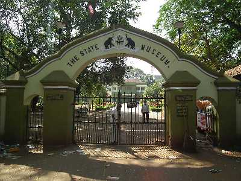

Home
(current)
Explore
Districts
Adventure
Holiday Packages
Cusines
Heritage
The Wild
Reviews
Destination
WaterFalls
Beaches
Museum
Contact Us
Sign In
Search
THRISSUR
Officially known as the cultural capital of Kerala, Thrissur is famous for fostering classical Keralan performing arts, religious sites and the renowned Thrissur Pooram festival, Onam festival and Vadakkumnathan Temple. Thrissur is the short form of Thiru-Shiva-Per-Ur which literally means “a city with three temples of Lord Shiva”. Thrissur later became anglicised to Trichur. Thrissur is from where Kerala gets a fair share of its festive glitter. Thrissur was the capital of the Kingdom of Kochi. The festivals celebrated here are the major attraction for tourists and a visit to Thrissur is incomplete without witnessing these. Other tourist spots in Thrissur include the Vadakkumnathan Kshetram Temple, Tomb of Shakthan Thampuran, Archaeology Museum, Athirapally Falls, Heritage Garden and many more.
How to Reach:
Bus
Thrissur is connected to the other major cities through a good network of roads by NH544, NH17, NH47 and NH66. You can also travel to Thrissur by bus from the cities like Kannur, Kozhikode, Thiruvananthapuram, Mangalore, Bangalore and Coimbatore
Train
Thrissur is well connected and serviced by rail to all the major cities in the country. Daily trains are available from the cities like Mumbai, Kolkata, Chennai, Bangalore, New Delhi and Hyderabad. In fact, the Thrissur Railway Station is the major railhead in South India.
Flight
Kochi International Airport is the nearest airport from Thrissur which is well connected to all the major Indian cities via regular flights. It is also connected with direct flights from the Middle East, Maldives, Europe, Singapore and Sri Lanka.
Places to Visit
Athirapally Falls:
Athirapally Falls is a marvellous cascade of frothy waters that makes its way from the Anamudi mountains of the Western Ghats. Also called as Bahubali Waterfall, this 80 ft high and 330 ft wide marvel is the largest waterfall in Kerala. It is often referred to as the "Niagara Falls of India".
vadakummnathan temple :
With a collection of beautiful Mural paintings, some of which are more than 400 years old, this gigantic 1000 year old temple and historical structure is famous for the Nataraja Mural near the main gate.
Thrissur Zoo:
Formerly known as the Trichur Zoo, Thrissur Zoo and the State Museum is located in the heart of Thrissur city, Kerala. Started in the year 1885, the attraction covers an area of approximately 13.5 acres. The zoo houses a wide variety of animals, reptiles, and birds. Besides the extensive variety of fauna, the zoo has many other attractions to fascinate you.
Shakthan Thampuran Palace:
Shakthan Thampuran Palace situated in the town of Thrissur marks the royal residence of the king of Cochin and has been a famous tourist attraction because of its historical value. Popularly known as Vadakkekara Palace, it dated back to the time of the King of Cochin named Rama Varma Shakthan Thampuran and was constructed in 1795.
Things to do
Site seeing
The beaches in Thrissur are mostly visited by the locals and do not have as much of a tourist quotient.
Pooram:
Thrissur Pooram (Thrissur Puram) is an annual Hindu religion festival held in Kerala, India. It is held at the Vadakkunnathan Temple in Thrissur every year on the Pooram (pronounced [puːɾam]) day - the day when the moon rises with the Pooram star in the Malayalam Calendar month of Medam.
Puli kali:
Pulikkali is a recreational folk art from the state of Kerala. It is performed by trained artists to entertain people on the occasion of Onam, an annual harvest festival, celebrated mainly in the Indian state of Kerala.
Gallery
